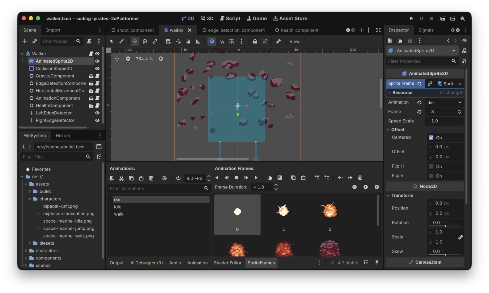
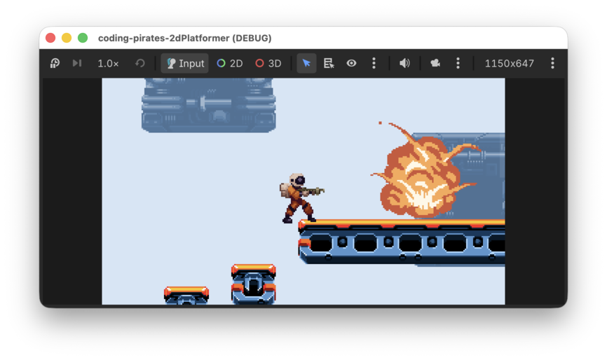

Godot 2D Platformer - level 12 fjender der dør
I level 11 Fik vi vores Walker til at gå frem og tilbage på en platform.
Lad os fejre det ved at kunne skyde dem!
Hvad skal vi lave
Lad os tænke os om. Hvilke dele er involveret når vi skal have fjenderne til at blive ramt af skud?
- Vores
Bulletkan sige at den har ramt "noget" i dens_on_body_enteredsom vi skrev i level 9. Det skal vi vel have udvidet så vi kan spørge om det den har ramt er en fjende - Så skal vi have udvidet vores
Walkermed enhitfunktion som vi kan kalde fra voresBullet - Den
hitfunktion skal tælleWalkerens helbred ned, - Derfor kunne det være smart hvis vi har en
HealthComponentsom kunne holde styr på helbred og som vi kunne bruge både tilWalkerogPlayer.HealthComponentbliver oprettet med enhealthværdi (et tal, f.eks 3 for voresWalker) og skal så - i første omgang - kunne to ting:- tælle
healthned hvis man er ramt - kunne svare på om man
is_dead(altså hvishealth= 0)
- tælle
- Hvis vores
WalkersHealthComponentmelderis_deadskal vi have voresAnimationComponenttil at afspille en "die" animation - Og så skal vi fjerne vores
Walkerfra voresLevel01
OK, det kan vi jo bryde ned og lave det om til en liste som vi kan arbejde os frem efter, altså:
Puha, mange punkter! Lad os komme i gang.
Udvid
Bullet til at kunne se hvad den har ramt
I vores bullet.gd har vi:
func _on_body_entered(body: Node2D) -> void:
queue_free()Som lige nu bare fjerner vores Bullet fra skærmen når
den har ramt noget.
Hvis nu vi udvider den til at kigge på den body
parameter den får med ind, og som fortæller os hvad det er vi
har ramt, så kan vi styre hvad der skal ske.
Der er to ting vi kan ramme.
- Væg/gulv, altså noget af typen
TileMapLayer CharacterBody2Dsom kan være entenWalkereller senerePlayernår voresWalkerskal kunne skyde igen (og det skal den!)
Lad os tage dem en af gangen.
Har vi ramt noget af
typen TileMapLayer?
I Godot kan vi spørge om noget is af en type, så vi kan
sige:
if body is enellerandentype
Altså...det vi har ramt, er det af en bestemt type?
Det kan vi bruge sådan her:
func _on_body_entered(body: Node2D) -> void:
if body is TileMapLayer:
queue_free()Kør dit spil nu og prøv at skyd ind i muren. Vores kugler forsvinder stadig, perfekt, hak ved den.
Har vi ramt noget af
typen CharacterBody2D?
Nu har vi lært om is så vi burde vel kunne udvide vores
on_body_entered med et check mere:
func _on_body_entered(body: Node2D) -> void:
if body is TileMapLayer:
queue_free()
if body is CharacterBody2D:
## hvad skal vi gøre her??Og ja...hvad skal vi så gøre? Ja vi ved jo at vi har ramt en
CharacterBody2D og det betyder at det er enten en
Walker eller senere - når vores Walker kan
skyde - en Player vi har ramt.
Lige som vi gjorde i vores 2D space shooter kan vi lave en funktion
på Walker/Player som vi kalder.
Så, til at starte med "leger vi" at der findes en funktion kaldet
hit på alle CharacterBody2Ds som vores
Bullet rammer. Så kan vi skrive:
func _on_body_entered(body: Node2D) -> void:
if body is TileMapLayer:
queue_free()
if body is CharacterBody2D:
body.hit()
queue_free()Og det kan vi optimere lidt. Vi kalder i begge tilfælde
queue_free for at fjerne vores Bullet når den
har ramt noget. Vi kan lave det om så vi altid kalder
queue_free og så kan vi helt fjerne checket på om det er en
TileMapLayer vi ramt.
Sådan her:
func _on_body_entered(body: Node2D) -> void:
if body is CharacterBody2D:
body.hit()
queue_free()Kør dit spil igen og skyd ind i muren, kuglerne forsvinder stadig, perfekt!
Skyd så på din Walker...ups, vi får en fejl:
Invalid call. Nonexistent function 'hit' in base 'CharacterBody2D (walker.gd)'.
Nonexistent function 'hit'. Vi forsøger at kalde en funktion som ikke eksisterer. Nej det har Godot jo ret i, vi har ikke lavet funktionen endnu.
Den laver vi lige om lidt, men først, lad os lige tænke lidt mere.
Vi vil gerne vide hvor meget skade vores Bullet
har gjort da den ramte, og nu vi er i gang med at drømme kunne det være
fedt hvis man selv kunne styre hvor meget skade hver enkelt
Bullet skulle gøre, det kunne jo være vi ville lave nogle
super kraftige laser skud eller sådan noget senere.
Så, to ting:
- Lad os lave en
@export var damage: int = 1ibullet.gdså vi har mulighed for at overskrive den værdi senere hvis vi vil lave kraftigere kugler - Vi sender
damagemed ihitsom parameter så voresWalkerved hvad der har ramt den.
Prøv selv, du kan godt :)
Vores færdige bullet.gd script ser sådan her ud:
extends Area2D
@export_subgroup("Properties")
@export var speed: float = 400.0
@export var damage: int = 1
# Skal vi skyde mod venstre eller højre
var direction: Vector2 = Vector2.RIGHT
func _ready() -> void:
$VisibleOnScreenNotifier2D.connect("screen_exited", _on_screen_exited)
connect("body_entered", _on_body_entered)
func add(pos: Vector2, dir: Vector2, offset: Vector2) -> void:
# regn x og y ud for vores bullet
var x_pos = pos.x + (dir.x * offset.x)
var y_pos = pos.y + (dir.y * offset.y)
# og sæt vores Bullets position ud fra de
# udregnede værdier
position = Vector2(x_pos, y_pos)
# gem direction
direction = dir
# hvordan skal vores animation vende?
$AnimatedSprite2D.flip_h = dir.x < 0
$AnimatedSprite2D.play("shoot")
func _physics_process(delta: float) -> void:
position += speed * delta * direction
func _on_body_entered(body: Node2D) -> void:
if body is CharacterBody2D:
body.hit(damage)
queue_free()
func _on_screen_exited() -> void:
queue_free()Perfekt, det var skridt et:
Videre!
Tilføj hit funktion
på Walker
Da vi kørte vores spil lige før fik vi en fejl fordi vi ikke
har en hit funktion på vores Walker,
lad os rette op på det.
Tilføj en hit funktion på walker.gd der
tager en int parameter som vi kalder damage. I
første omgang kan den bare printe ud at vi er ramt.
func hit(damage: int) -> void:
print("av! ", damage)Kør dit spil igen og prøv at skyd på din Walker, nu
skulle den gerne printe i "Output" hver gang den bliver ramt
av! 1
Super, det var step to
Opret ny
HealthComponent
Så skal vi have lavet en ny HealtComponent som kan holde
styr på hvor meget health den CharacterBody2D den er
tilknyttet har. Og det vil så sige at Walker får en
HealthComponent og senere får vores Player
også en HealthComponent.
Lad os lige gentage hvad det var vi skrev ovenfor at vores
HealtComponent skal
- Derfor kunne det være smart hvis vi har en
HealthComponentsom kunne holde styr på helbred og som vi kunne bruge både tilWalkerogPlayer.HealthComponentbliver oprettet med enhealthværdi (et tal, f.eks 3 for voresWalker) og skal så - i første omgang - kunne to ting:
- tælle
healthned hvis man er ramt- kunne svare på om man
is_dead(altså hvishealth= 0)
Så det vil sige vi skal have:
- en
healthvariabel af typenint - en funktion kaldet
hitsom tager en parameter af typenintkaldetdamagemed ind, ikke har nogen returværdi, og som så tællerhealthned - en funktion kaldet
is_deadsom ikke tager nogle parametre med ind og som returnerer enbool(altså ententrueellerfalse) alt efter omhealther < 0 eller ej - Lad os lige tænke lidt fremad og tilføje en
max_healthogså, som er en setting vi kan styre udefra og som angiver hvor megethealthman max kan have. Til at starte med sætter vi såhealth=max_health
Vi har skrevet det så mange gange så nu burde du kunne huske hvordan
man laver en ny HealthComponent, så prøv dig frem og sig
til hvis du sidder fast.
Her er vores health_component.gd script som dækker de 4
punkter ovenfor:
class_name HealthComponent
extends Node
@export_category("Settings")
@export var max_health: int = 3
var health: int = max_health
func hit(damage: int) -> void:
health -= damage
func is_dead() -> bool:
return health <= 0Og så kan vi strege step tre
Tilføj
HealthComponent til Walker
Så skal vi have tilføjet vores nye HealthComponent til
vores Walker. Igen har du efterhånden gjort det nogle gange
så prøv og se om du ikke kan selv.
Nu kan vi så bruge vores nye HealthComponent i vores
walker.gd script.
Erstat
func hit(damage: int) -> void:
print("av! ", damage)med et kald til hit funktionen som vi lige har lavet i
vores HealthComponent
func hit(damage: int) -> void:
health_component.hit(damage)Og så skal vi vel også lige checke om vi er døde eller ej, det kan vi
gøre som det første i _process
extends CharacterBody2D
@export_subgroup("Nodes")
@export var animation_component: AnimationComponent
@export var edge_detection_component: EdgeDetectionComponent
@export var gravity_component: GravityComponent
@export var health_component: GravityComponent
@export var horizontal_movement_component: HorizontalMovementComponent
var current_movement_direction: float = -1
func _ready() -> void:
horizontal_movement_component.speed = 50
func _physics_process(delta: float) -> void:
gravity_component.handle_gravity(self, delta)
current_movement_direction = edge_detection_component.handle_edge_detection(current_movement_direction)
horizontal_movement_component.handle_horizontal_movement(self, current_movement_direction)
# Husk den her!
move_and_slide()
func _process(delta: float) -> void:
if health_component.is_dead():
print("goodbye cruel world")
animation_component.handle_move_animation(current_movement_direction)
func hit(damage: int) -> void:
health_component.hit(damage)Kør dit spil igen og skyd din Walker 3 gange. Nu skulle
det gerne vælte ud i "Output" med:
goodbye cruel world goodbye cruel world goodbye cruel world goodbye cruel world ...
Perfekt, det var step fire.
Vi skal nok komme tilbage og lave det pænt i step syv, lad os komme videre til at lave en ny "die" animation.
Opret ny "die" animation
I vores Walkers AnimatedSprite2D skal du
tilføje en ny animation.
- Kald animationen "die"
- Du kan bruge sprite sheetet "explosion-animation.png" som du finder i "Explosions" mappen i assets
Det ser sådan her ud ved os hvis du skal have noget at kigge efter

Hak ved step fem
Tjuhej hvor det går, videre til step 6
Udvid
AnimationComponent til at håndtere at en karakter dør
Så skal vi have lavet en funktion så vores
AnimationComponent kan afspille vores nye "die"
animation.
Det ser sådan her ud:
func handle_die_animation() -> void:
sprite.play("die")
await sprite.animation_finishedLæg mærke til line to:
await sprite.animation_finished
Den gør at vores funktion først siger til hvem end der kalder den at "nu er jeg færdig", når animationen er spillet færdig. Det bliver nyttigt for os lige om lidt.
I første omgang kan vi hakke step seks af på listen:
Og så skal vi have bundet det hele sammen i en smuk sløjfe i
walker.gd scriptet
Håndter at vores Walker er død
Nu har vi alle byggeklodserne klar.
I _process ved vi allerede om vi is_dead
eller ej, det kan vi spørge vores HealtComponent om.
Du så tidligere at vi printede "goodbye cruel world" ud en masse
gange. Det er jo fordi _process kører 60 gange i sekundet,
så vi er nødt til lige at have en lokal variabel der holder styr på om
vi er igang med at dø og kun kalder vores "håndter at
Walkeren er død" første gang vi rammer
is_dead.
Lad os lave en lokal variable i scriptet:
var is_dying: bool = false
Så har vi den som flag til at holde styr på om vi er ved at dø eller ej.
Og så kan vi lave et check i _process på om vi er ved at
dø eller ej.
Hvis vi er ved at dø skal vi ikke gøre mere i _process,
det ser sådan her ud:
func _process(delta: float) -> void:
if is_dying:
return
... mere kode her underSå nu siger vi hver gang process kører: Er du ved at dø? Så skal du ikke gøre mere!
Ellers kan vi jo checke om man is_dead og hvis man er,
så kalder vi en funktion kaldet die() som vi skriver lige
om lidt. Vores _process ser nu sådan her ud:
func _process(delta: float) -> void:
# er vi ved at dø, så bare stop her
if is_dying:
return
# Kun hvis vi er døde kommer vi videre her til
# Er vi så døde i mellemtiden?
if health_component.is_dead():
# Ja det var vi, så kald die funktionen der
# sørger for at vi dør pænt :)
await die()
# Vi var ikke døde så vi kører bare videre
animation_component.handle_move_animation(current_movement_direction)Bemærk at vi awaiter die funktionen for at
vente på at den kører færdig inden vi gør mere.
die funktionen
Nå, vi har sparket problemet foran os, men nu kan vi ikke undgå det mere. Lige nu er vi der hvor vi er ramt så mange gange at vi skal dø.
Hvad skal der ske når vi dør?
- Vi skal sætte
is_dyingtiltrueså vi ikke ryger videre i_processmens vi er i gang med at dø - Vi skal sætte
current_movement_directiontil 0 så vi stopper med at gå mens vi dør - Vi skal sætte
physics_processtilfalse, hvilket gør at vi ikke kalder_physics_processmere, det er der ingen grund til mens vi dør - Vi skal
awaite at voresanimation_componentafspiller "die" animationen - Når alt det er færdigt kan vi rydde op efter os selv med
queue_free
Prøv at skriv funktionen selv inden du kigger på vores forsøg:
func die() -> void:
# flip is_dying så vi ikke ryger i _process igen
is_dying = true
# stop så vi ikke går videre
current_movement_direction = 0
# gør så player kan løbe igennem animationen
set_physics_process(false)
# vent på at die animationen spiller færdig
await animation_component.handle_die_animationn()
# og ryd pænt op
queue_free()Her er hele walker.gd scriptet:
extends CharacterBody2D
@export_subgroup("Nodes")
@export var animation_component: AnimationComponent
@export var edge_detection_component: EdgeDetectionComponent
@export var gravity_component: GravityComponent
@export var health_component: HealthComponent
@export var horizontal_movement_component: HorizontalMovementComponent
var current_movement_direction: float = -1
var is_dying: bool = false
func _ready() -> void:
horizontal_movement_component.speed = 50
is_dying = false
func _physics_process(delta: float) -> void:
print("physics_process")
gravity_component.handle_gravity(self, delta)
current_movement_direction = edge_detection_component.handle_edge_detection(current_movement_direction)
horizontal_movement_component.handle_horizontal_movement(self, current_movement_direction)
# Husk den her!
move_and_slide()
func _process(delta: float) -> void:
print("_process is_dying: ", is_dying)
# er vi ved at dø, så bare stop her
if is_dying:
return
print("not dying")
# Kun hvis vi er døde kommer vi videre her til
# Er vi så døde i mellemtiden?
if health_component.is_dead():
# Ja det var vi, så kald die funktionen der
# sørger for at vi dør pænt :)
print("dying")
await die()
# Vi var ikke døde så vi kører bare videre
animation_component.handle_move_animation(current_movement_direction)
func hit(damage: int) -> void:
health_component.hit(damage)
func die() -> void:
# flip is_dying så vi ikke ryger i _process igen
is_dying = true
# stop så vi ikke går videre
current_movement_direction = 0
# gør så player kan løbe igennem animationen
set_physics_process(false)
# vent på at die animationen spiller færdig
await animation_component.handle_die_animationn()
# og ryd pænt op
queue_free()Kør dit spil igen og prøv at skyd din Walker...die
scum!

Og med det kan vi strege sidste punkt på vores lange liste
Phew!
Det var en lang omgang men nu har vi flere af byggeklodserne til når
vi skal håndtere at vores Player er ramt.
Og helt ærlig, det er da ikke fair at vi kan skyde på de der Walkers men at de ikke kan skyde på os, er det? Nej vel er det ej! Så i næste level begynder vi at få vores fjender til at skyde tilbage.
I første omgang vil vi gøre sådan at fjenderne kan se os når vi kommer tæt på dem og så de vender sig om efter os, det bliver godt så skynd dig videre til næste level, vi ses.